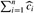
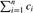
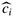
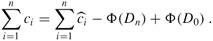

|
|
< Day Day Up > |
|
Instead of representing prepaid work as credit stored with specific objects in the data structure, the potential method of amortized analysis represents the prepaid work as "potential energy," or just "potential," that can be released to pay for future operations. The potential is associated with the data structure as a whole rather than with specific objects within the data structure.
The potential method works as follows. We start with an initial data structure D0 on which n operations are performed. For each i = 1, 2, ..., n, we let ci be the actual cost of the ith operation and Di be the data structure that results after applying the ith operation to data structure Di-1. A potential function Φ maps each data structure Di to a real number Φ(Di), which is the potential associated with data structure Di. The amortized cost  of the ith operation with respect to potential function Φ is defined by
of the ith operation with respect to potential function Φ is defined by
The amortized cost of each operation is therefore its actual cost plus the increase in potential due to the operation. By equation (17.2), the total amortized cost of the n operations is
The second equality follows from equation (A.9), since the Φ(Di) terms telescope.
If we can define a potential function Φ so that Φ(Dn) ≥ Φ(D0), then the total amortized cost  is an upper bound on the total actual cost . In practice, we do not always know how many operations might be performed. Therefore, if we require that Φ (Di) ≥ Φ (D0) for all i, then we guarantee, as in the accounting method, that we pay in advance. It is often convenient to define Φ (D0) to be 0 and then to show that Φ (Di) ≥ 0 for all i. (See Exercise 17.3-1 for an easy way to handle cases in which Φ(D0) ≠ 0.)
Intuitively, if the potential difference Φ(Di) - Φ(Di-1) of the ith operation is positive, then the amortized cost  represents an overcharge to the ith operation, and the potential of the data structure increases. If the potential difference is negative, then the amortized cost represents an undercharge to the ith operation, and the actual cost of the operation is paid by the decrease in the potential.
represents an overcharge to the ith operation, and the potential of the data structure increases. If the potential difference is negative, then the amortized cost represents an undercharge to the ith operation, and the actual cost of the operation is paid by the decrease in the potential.
The amortized costs defined by equations (17.2) and (17.3) depend on the choice of the potential function Φ. Different potential functions may yield different amortized costs yet still be upper bounds on the actual costs. There are often trade-offs that can be made in choosing a potential function; the best potential function to use depends on the desired time bounds.
To illustrate the potential method, we return once again to the example of the stack operations PUSH, POP, and MULTIPOP. We define the potential function Φ on a stack to be the number of objects in the stack. For the empty stack D0 with which we start, we have Φ(D0) = 0. Since the number of objects in the stack is never negative, the stack Di that results after the ith operation has nonnegative potential, and thus
|
Φ(Di) |
≥ |
0 |
|
= |
Φ(D0). |
The total amortized cost of n operations with respect to Φ therefore represents an upper bound on the actual cost.
Let us now compute the amortized costs of the various stack operations. If the ith operation on a stack containing s objects is a PUSH operation, then the potential difference is
|
Φ(Di) - Φ(Di-1) |
= |
(s + 1) -s |
|
= |
1 |
By equation (17.2), the amortized cost of this PUSH operation is
|
|
= |
ci + Φ(Di) - Φ (Di-1) |
|
= |
1 + 1 |
|
|
= |
2 |
Suppose that the ith operation on the stack is MULTIPOP(S, k) and that ′ = min(k, s) objects are popped off the stack. The actual cost of the operation is ′, and the potential difference is
Φ(Di) - Φ(Di-1) - -′.
Thus, the amortized cost of the MULTIPOP operation is
|
 |
= |
ci + Φ(Di) - Φ(Di-1) |
|
= |
′ - ′ |
|
|
= |
0. |
Similarly, the amortized cost of an ordinary POP operation is 0.
The amortized cost of each of the three operations is O(1), and thus the total amortized cost of a sequence of n operations is O(n). Since we have already argued that Φ(Di) ≥ Φ(D0), the total amortized cost of n operations is an upper bound on the total actual cost. The worst-case cost of n operations is therefore O(n).
As another example of the potential method, we again look at incrementing a binary counter. This time, we define the potential of the counter after the ith INCREMENT operation to be bi , the number of ′s in the counter after the ith operation.
Let us compute the amortized cost of an INCREMENT operation. Suppose that the ith INCREMENT operation resets ti bits. The actual cost of the operation is therefore at most ti + 1, since in addition to resetting ti bits, it sets at most one bit to 1. If bi = 0, then the ith operation resets all k bits, and so bi-1 = ti = k. If bi > 0, then bi = bi-1 - ti + 1. In either case, bi ≤ bi-1 - ti + 1, and the potential difference is
|
Φ(Di) - Φ(Di-1) |
≤ |
(bi-1 - ti + 1) - bi-1 |
|
= |
1 - ti. |
The amortized cost is therefore
|
|
= |
ci + Φ(Di) - Φ(Di-1) |
|
≤ |
(ti + 1) + (1 - ti) |
|
|
= |
2. |
If the counter starts at zero, then Φ(D0) = 0. Since Φ(Di) ≥ 0 for all i, the total amortized cost of a sequence of n INCREMENT operations is an upper bound on the total actual cost, and so the worst-case cost of n INCREMENT operations is O(n).
The potential method gives us an easy way to analyze the counter even when it does not start at zero. There are initially b0 ′s, and after n INCREMENT operations there are bn 1's, where 0 ≤ b0, bn ≤ k. (Recall that k is the number of bits in the counter.) We can rewrite equation (17.3) as
| (17.4) |  |
We have  ≤ 2 for all 1 ≤ i ≤ n. Since Φ(D0) = b0 and Φ(Dn) = bn, the total actual cost of n INCREMENT operations is
≤ 2 for all 1 ≤ i ≤ n. Since Φ(D0) = b0 and Φ(Dn) = bn, the total actual cost of n INCREMENT operations is
Note in particular that since b0 ≤ k, as long as k = O(n), the total actual cost is O(n). In other words, if we execute at least n = Ω(k) INCREMENT operations, the total actual cost is O(n), no matter what initial value the counter contains.
Suppose we have a potential function Φ such that Φ(Di) ≥ Φ(D0) for all i, but Φ(D0) ≠ = 0. Show that there exists a potential function Φ′ such that Φ′(D0) = 0, Φ′(Di) ≥ 0 for all i ≥ 1, and the amortized costs using Φ′ are the same as theamortized costs using Φ.
Consider an ordinary binary min-heap data structure with n elements that supports the instructions INSERT and EXTRACT-MIN in O(lg n) worst-case time. Give a potential function Φ such that the amortized cost of INSERT is O(lg n) and the amortized cost of EXTRACT-MIN is O(1), and show that it works.
What is the total cost of executing n of the stack operations PUSH, POP, and MULTIPOP, assuming that the stack begins with s0 objects and finishes with sn objects?
Suppose that a counter begins at a number with b 1's in its binary representation, rather than at 0. Show that the cost of performing n INCREMENT operations is O(n) if n = Ω(b). (Do not assume that b is constant.)
Show how to implement a queue with two ordinary stacks (Exercise 10.1-6) so that the amortized cost of each ENQUEUE and each DEQUEUE operation is O(1).
Design a data structure to support the following two operations for a set S of integers:
INSERT(S, x) inserts x into set S.
DELETE-LARGER-HALF(S) deletes the largest ⌈S/2⌉ elements from S.
Explain how to implement this data structure so that any sequence of m operations runs in O(m) time.
|
|
< Day Day Up > |
|